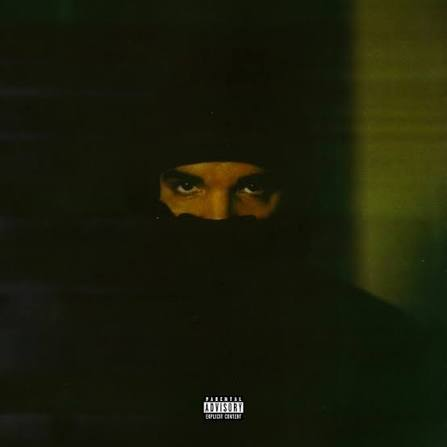

Главная Dark Lane Demo Tapes Таблица альбомов

Dark Lane Demo Tapes - микстейп канадского рэпера и певца Drake, выпущенный 1 мая 2020 года на лейблах OVO Sound и Republic Records.
Релиз собрал треки, которые до этого утекли в интернет или выкладывались артистом в соцсетях, а также несколько новых композиций. Сам Drake анонсировал микстейп как подарок фанатам перед выходом следующего студийного альбома.
Главным хитом стал «Toosie Slide» - песня, созданная специально под танец для TikTok. Также выделяются «Chicago Freestyle» с Giveon и «Pain 1993» с Playboi Carti.